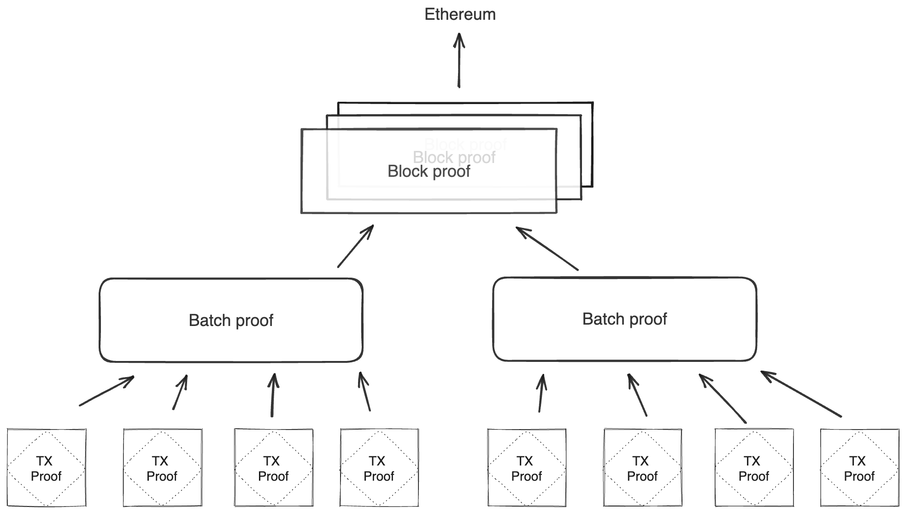
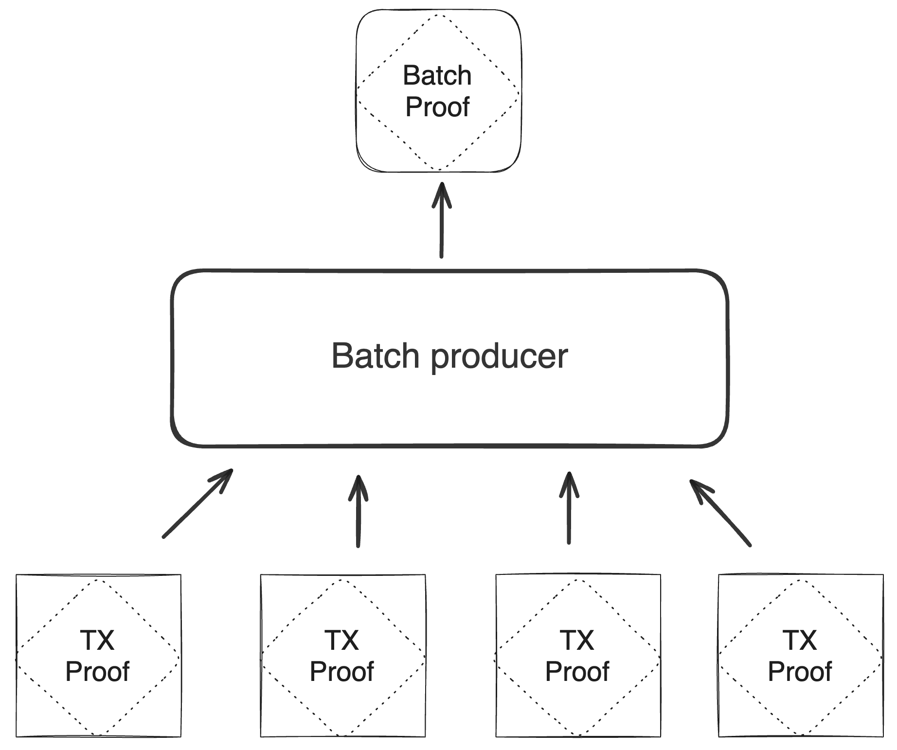
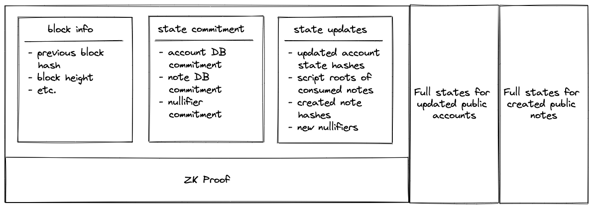

Blockchain
The Miden blockchain protocol describes how the state progresses through Blocks, which are containers that aggregate account state changes and their proofs, together with created and consumed notes. Blocks represent the delta of the global state between two time periods, and each is accompanied by a corresponding proof that attests to the correctness of all state transitions it contains. The current global state can be derived by applying all the Blocks to the genesis state.
Miden's blockchain protocol aims for the following:
- Proven transactions: All included transactions have already been proven and verified when they reach the block.
- Fast genesis syncing: New nodes can efficiently sync to the tip of the chain.

Batch production
To reduce the required space on the blockchain, transaction proofs are not directly put into blocks. First, they are batched together by verifying them in the batch producer. The purpose of the batch producer is to generate a single proof that some number of proven transactions have been verified. This involves recursively verifying individual transaction proofs inside the Miden VM. As with any program that runs in the Miden VM, there is a proof of correct execution running the Miden verifier to verify transaction proofs. This results into a single batch proof.

The batch producer aggregates transactions sequentially by verifying that their proofs and state transitions are correct. More specifically, the batch producer ensures:
- Ordering of transactions: If several transactions within the same batch affect a single account, the correct ordering must be enforced. For example, if
Tx1andTx2both describe state changes of accountA, then the batch kernel must verify them in the order:A -> Tx1 -> A' -> Tx2 -> A''. - Uniqueness of notes in a single batch: The batch producer must ensure the uniqueness of all notes across transactions in the batch. This will prevent the situation where duplicate notes, which would share identical nullifiers, are created. Only one such duplicate note could later be consumed, as the nullifier will be marked as spent after the first consumption. It also checks for double spends in the set of consumed notes, even though the real double spent check only happens at the block production level.
- Expiration windows: It is possible to set an expiration window for transactions, which in turn sets an expiration window for the entire batch. For instance, if transaction
Tx1expires at block8and transactionTx2expires at block5, then the batch expiration will be set to the minimum of all transaction expirations, which is5. - Note erasure of erasable notes: Erasable notes don't exist in the Notes DB. They are unauthenticated. Accounts can still consume unauthenticated notes to consume those notes faster, they don't have to wait for notes being included into a block. If creation and consumption of an erasable note happens in the same batch, the batch producer erases this note.
Block production
To create a Block, multiple batches and their respective proofs are aggregated. Block production is not parallelizable and must be performed by the Miden operator. In the future, several Miden operators may compete for Block production. The schema used for Block production is similar to that in batch production—recursive verification. Multiple batch proofs are aggregated into a single Block proof.
The block producer ensures:
- Account DB integrity: The Block
N+1Account DB commitment must be authenticated against all previous and resulting account commitments across transactions, ensuring valid state transitions and preventing execution on stale states. - Nullifier DB integrity: Nullifiers of newly created notes are added to the Nullifier DB. The Block
N+1Nullifier DB commitment must be authenticated against all new nullifiers to guarantee completeness. - Block hash references: Check that all block hashes references by batches are in the chain.
- Double-spend prevention: Each consumed note’s nullifier is checked against prior consumption. The Block
NNullifier DB commitment is authenticated against all provided nullifiers for consumed notes, ensuring no nullifier is reused. - Global note uniqueness: All created and consumed notes must be unique across batches.
- Batch expiration: The block height of the created block must be smaller or equal than the lowest batch expiration.
- Block time increase: The block timestamp must increase monotonically from the previous block.
- Note erasure of erasable notes: If an erasable note is created and consumed in different batches, it is erased now. If, however, an erasable note is consumed but not created within the block, the batch it contains is rejected. The Miden operator's mempool should preemptively filter such transactions.
In final Block contains:
- The commitments to the current global state.
- The newly created nullifiers.
- The commitments to newly created notes.
- The new state commitments for affected private accounts.
- The full states for all affected public accounts and newly created notes.
The Block proof attests to the correct state transition from the previous Block commitment to the next, and therefore to the change in Miden's global state.

Tip: Block Contents
- State updates: Contains only the hashes of updated elements. For example, for each updated account, a tuple is recorded as
([account id], [new account hash]).- ZK Proof: This proof attests that, given a state commitment from the previous
Block, a set of valid batches was executed that resulted in the new state commitment.- The
Blockalso includes the full account and note data for public accounts and notes. For example, if account123is a public account that has been updated, you would see a record in the state updates section as(123, 0x456..), and the full new state of this account (which should hash to0x456..) would be included in a separate section.
Verifying blocks
To verify that a Block corresponds to a valid global state transition, the following steps must be performed:
- Compute the hashes of public accounts and note states.
- Ensure that these hashes match the records in the state updates section.
- Verify the included
Blockproof using the following public inputs and output:- Input: Previous
Blockcommitment. - Input: Set of batch commitments.
- Output: Current
Blockcommitment.
- Input: Previous
These steps can be performed by any verifier (e.g., a contract on Ethereum, Polygon AggLayer, or a decentralized network of Miden nodes).
Syncing from genesis
Nodes can sync efficiently from genesis to the tip of the chain through a multi-step process:
- Download historical
Blocks from genesis to the present. - Verify zero-knowledge proofs for all
Blocks. - Retrieve current state data (accounts, notes, and nullifiers).
- Validate that the downloaded state matches the latest
Block's state commitment.
This approach enables fast blockchain syncing by verifying Block proofs rather than re-executing individual transactions, resulting in exponentially faster performance. Consequently, state sync is dominated by the time needed to download the data.
Consensus and decentralization
Miden will start as a centralized L2 on the Ethereum network. Over time, Miden will decentralize, but this part of the protocol, especially consensus is not yet set.